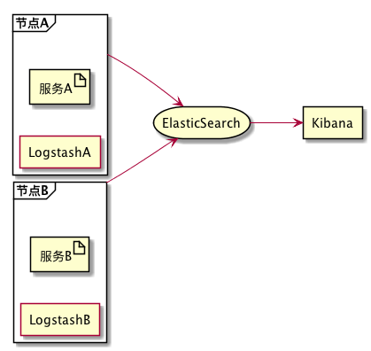
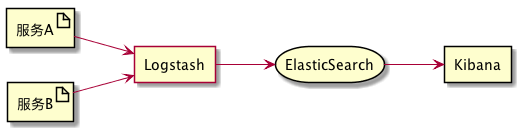

by Jamsa
in 开发
on 2018-06-13
|
tags: spring cloud
|
comments
这是Spring Cloud上手系列的第十篇，代码放在GitHub 上，随着本系列文章更新。
ELK简介
ELK是Logstash、ElasticSearch和Kibana的组合。Logstash处理日志的收集，ElasticSearch处理日志的检索，Kibana对日志进行可视化展示和查询。
在Spring Cloud微服务架构下可以使用ElasticSearch来存储两类信息：一类是通过Logstash收集的各个应用的日志，另一类是作为Zipkin的持久化存储。
Zipkin持久化
Zipkin本身支持采用ElasticSearch作为其存储引擎，它可以直接与ElasticSearch交互，将跟踪信息保存至ElasticSearch。
日志收集方式
微服务应用的日志则情况更复杂。ELK与Spring Cloud的集成有两种方式：
一种是各个微服务节点上部署Logstash实例。微服务输出日志时，按Logstash的需要输出为json格式。Logstash则监控这些日志目录，并将这些日志发送至ElasticSearch。由于Logstash是采用jruby实现的，fatjar有20M左右，并且它进行日志处理时候会消耗较多的cpu资源，会影响到微服务节点的性能，因此一般不建议采用此方案。

另一种方式是微服务节点上部署轻量化的日志收集器。通过日志收集器收集日志并转发至独立的Logstash节点。收集器的形式有很多种，可以直接使用Logger将日志转发给Logstash（这篇文章里我们使用这种方式），也可以使用轻量化的日志收集器Filebeat、rsyslog等。

准备ELK环境
为测试方便，我们使用Docker来运行ELK镜像，这里不直接使用ELK官方镜像。官方镜像的E L K各个组件是独立的。为了测试方便，我们使用集成了ELK三个组件的像 …
Read more...